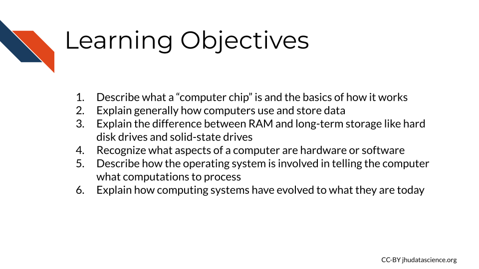
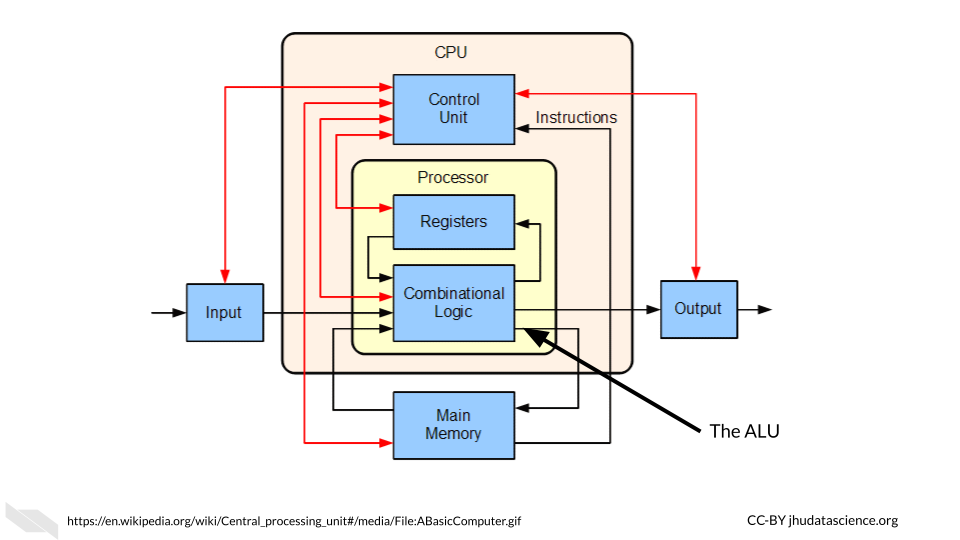
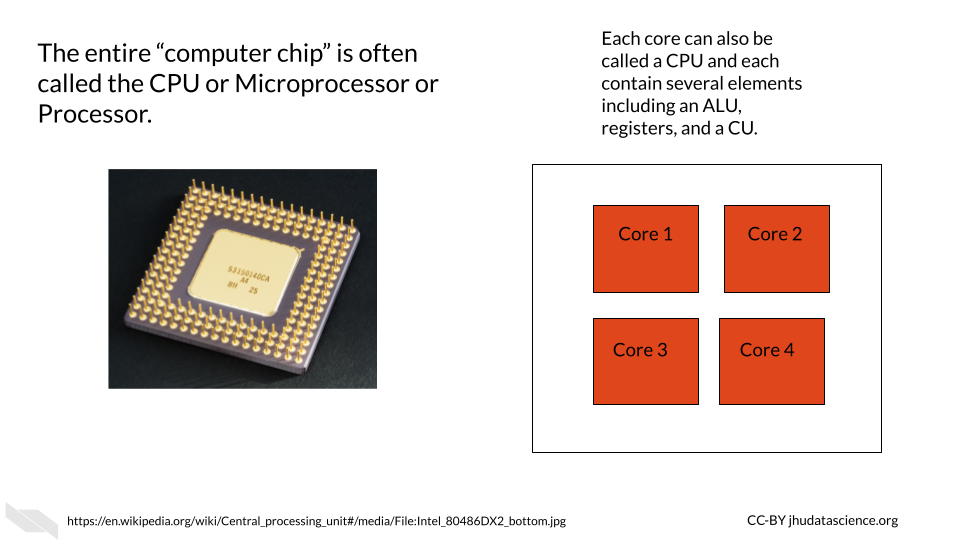
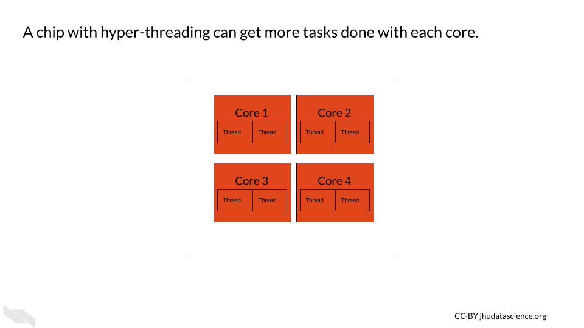
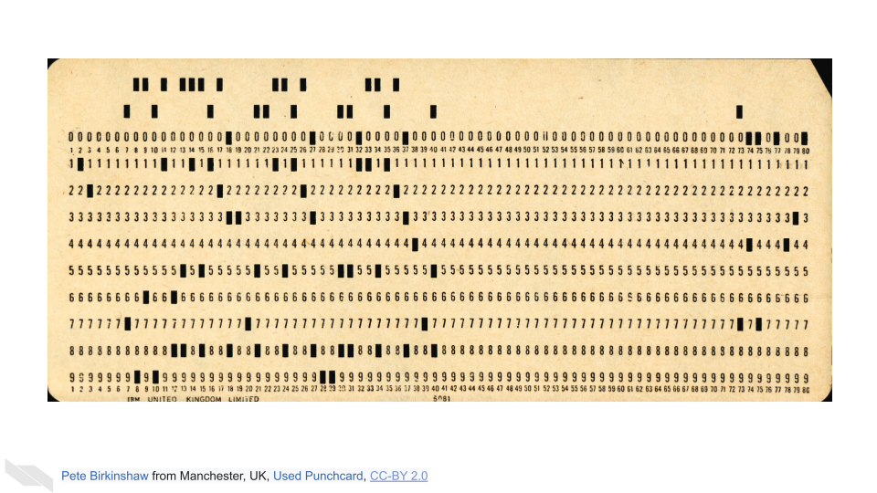

Chapter 3 Binary Data to Computations
Now that we are familiar with transistors and binary data, we will next discuss how computers process and store data.

3.0.1 CPU - Central Processing Unit
The CPU, the “Central Processing Unit”, is often called the brain of the computer. Like its name, it is one of the most important and prominent parts of the computer, performing and orchestrating computational tasks “Central Processing Unit” (2021).
The CPU is sometimes called a processor or microprocessor (however, technically, these terms include both the CPU and other elements). The CPU is often what people are referring to when they describe a “computer chip” (which again, technically includes other elements) “Central Processing Unit” (2021).
The CPU is made up of several components, a few of which holds particular importance. We already discussed two of those components:
- Arithmetic Logic Unit (ALU)
- Registers
- Control Unit (CU)
A group of these components together is called a core. Multiple cores together are also referred to as CPUs. As you can see, describing these structures can get a little tricky because of all the confusing terminology!
The component that we haven’t yet discussed, the Control Unit, coordinates the ALU and the data stored in the registers so that the ALU can perform the operations on the right data stored in the registers at the right time (Bräunl 2008).

Modern computers now have multiple cores. What does this mean?
This means that there are multiple groups of the above components that can each process data within the same computer. A dual core CPU is a chip with two cores. A quad-core CPU is a chip with 4 cores and so on. This allows modern computers to perform multiple tasks at the same time, instead of performing tasks sequentially. For example, a typical laptop with 4 cores nowadays can perform 4 tasks simultaneously. This ability to multitask makes our computers much faster than they used to be (“Central Processing Unit” 2021).
In addition to the main CPU (or CPUs, or cores, depending on your favorite name), computers may be equipped with specialized processors called GPUs, which stands for graphics processing units, that are especially efficient at tasks involving images (gaming et al. n.d.). Therefore, tasks that involve images are often performed using the GPU(s) and not the CPU(s). This enables more efficient processing of data by freeing up the CPU(s) to focus on tasks not involving images. Note, however, that GPU processors are also “generally programmable” (meaning they can work with different types of data) and can also be used to perform tasks that don’t involve images (gaming et al. n.d.). They are also very good at doing something called parallel processing, which means dividing up a single task into multiple pieces that can be run simultaneously and thus allowing for individual task processes to be more effective overall. People also use GPU graphics cards to add additional GPUs to their computers for more computational power (gaming et al. n.d.).

Hyper-threading is also an option for improving processing. This technology started in 2002 by Intel (“Hyper-Threading - Wikipedia” n.d.). The idea is that while part of a core is idle or waiting for a given task, another part of the same core can work to perform another task. This isn’t as efficient as a having an additional core or CPU, but it does improve efficiency (“What Is Hyper-threading HP® Tech Takes” n.d.; “Hyper-Threading - Wikipedia” n.d.). Many modern computer chips actually use all three efficiency boosters (having multiple cores, having GPUs, and using hyper-threading). Thus, a chip with 4 cores that also has hyper-threading can work on 8 tasks simultaneously. That being said, as it is now much easier to produce chips with multiple cores, and because there are some security concerns with hyper-threading, the trend of the computing field nowadays seems to be moving away from hyper-threading [(“What Is Hyper-threading HP® Tech Takes” n.d.; “Hyper-Threading - Wikipedia” n.d.).

3.0.2 Memory or RAM - short-term memory
We have already talked about how data can be stored in the registers within the CPU. This data or memory is used directly by the CPU during operations or tasks. However, our CPUs need additional quick access to instructional data to tell the CPU what to do to perform the operations and what data to use. This is also the data in a file that we are working with at a particular moment in time (“What Is RAM (Random-Access Memory)?” n.d.). This brings us to RAM, which stands for Random Access Memory. It is often simply referred to as memory. RAM is made out of transistors and capacitors, similar to the registers within the CPU, but it is located outside of, but very near, the CPU (“What Is RAM (Random-Access Memory)?” n.d.; “How RAM Works” 2000). One characteristic of this type of memory is that it is temporary. Data is stored in RAM for only a short time while your computer is running a task on it, then it disappears afterwards. Due to the fact that the stored memory disappears afterwards, this type of memory is also called volatile. This is why when you forget to save a file you are working on, you might lose your work (“What Is RAM (Random-Access Memory)?” n.d.; “How RAM Works” 2000).
For more information about how RAM works, check out this website (“How RAM Works” 2000).
3.0.3 Storage - long-term memory
We can also store data that we aren’t directly using when our computer is performing operations; for example, our excel files and word files that aren’t currently in use. This type of memory is called storage memory and is sometimes referred to as long-term or non-volatile memory, because the data can be preserved without using electricity. This type of memory is stored using hard disk drives (HDDs), also called hard drives, or more recently, solid-state drives (SSDs). The reason why accessing this memory is slower than accessing data stored in RAM is that it is located further away from the CPU, and data needs to be transferred from the storage to the CPU when a user wants to perform operations on such data. In addition, the right data needs to be found from all of your files, which also takes some time. Furthermore, the way in which data is retrieved from HDDs and SSDs is slower than that of RAM. However, this type of storage allows for much larger data capacity than RAM, and it is also cheaper (“What Is a Hard Drive?” n.d.; “How a Hard Drive Works - ExtremeTech” n.d.).
Hard disk drives store memory using magnetic methods (“How a Hard Drive Works - ExtremeTech” n.d.), while solid-state drives store memory using chips that have, guess what?
They are made of yet again the important basic building block of computers, the tiny bees - oops, I mean transistors! - just like the CPU chip! See how important transistors are!?
SSDs allow for much faster reading and writing of files, as well as increased reliability. However, they are more expensive and can eventually wear out (“What Is SSD (Solid-State Drive)?” n.d.).
Here’s a great explanation for how HDDs work and the difference with SSDs. It will also introduce the concept of caching, which allows for faster use of data from storage for the CPU. It is a special kind of memory that’s even faster and closer to the CPU than RAM (“CPU Cache” 2021):
See this link for more information about how SSDs work, and see here for an in depth explanation.
3.0.4 Hardware and software
So far we have talked about the hardware of a computer, which is the physical components of a computer, while software is the code that tells the hardware how to function (“Computer Hardware” 2021; “Software” 2021).
Software is also important for understanding how computers work. Specifically, it is useful to learn about operating systems.
3.0.5 Operating systems
The operating system (sometimes simply called the OS) is a set of code or software that translates the interactions between the user and the computer to tell the hardware (including memory and the CPU) of the computer what tasks the user wants the computer to perform and when (“Operating System” 2021).
You can think of this as the basic code to keep the computer running and functional, and to allow the user to use other forms of software, such as applications (“Operating System” 2021). Applications are specialized software programs like Microsoft Word, or an internet browser like Chrome that allow a user to do specific tasks on the computer. Your OS is what allows you to name, rename, move and save files. It helps you to keep track of memory and decides what memory should be used when and to run all of your application software. It also allows you to talk to other devices like printers or other computers.
Examples of commonly used operating systems on computers and phones are:
- Microsoft Windows (such as Windows 10, Windows 11 etc.)
- macOS (notice the OS here - it might make more sense now why it is called this)
- Unix
- Linux
- Android
Recall that we previously talked about how computers today are often called 64-bit? Operating systems are also designed in this way. A 64-bit operating system expects the hardware of the computer to allow for processing 64 bits of data at a time (the word size) (“Word (Computer Architecture)” 2021). If we have registers of at least this length in the CPU, then we can in fact perform operations on data that may be up to 64 bits in length. The data do not have to be the full 64 bits; it just means that we can perform operations on values that take up less than 64 bits.
This can be important because if you try to use an operating system that expects a longer data size than the hardware can accommodate, for example a 64-bit operating system on a 32-bit computer, this will not work. Application programs are also designed according to different data sizes and again you need to choose options that are equal to or less than the data size that your CPU can accommodate (“What Is 64-Bit (WOW64 and X64)?” n.d.). However, you can run a 32-bit operating system on a 64-bit computer, and a 32-bit application on a 64-bit operating system, but you may experienced reduced efficiency. See this article for more information on what happens when we use a 32-bit application with a 64-bit operating system.
3.0.6 Historical context
Previously, back when computers were so large and expensive that one whole university might have had just one computer (they didn’t have those nifty small transistors of today), computers didn’t have sophisticated operating systems. During that era, only one task could be performed at a time, by one person at a time. Back then, tasks were just manually started, prioritized, and scheduled by humans. Tasks or programs, and sometimes data, could be printed or punched on cards (called punchcards, punch cards or punched cards) that would be loaded into the machine. Data and code would be manually indicated by punching or creating a hole in the card in certain locations. For example, columns might indicate different numeric or alphabetical values. It could really be a pain for users if they accidentally dropped the cards for the program they wanted to run, as you can imagine (“Punched Card” 2021)!

There were many different kinds of punch cards over time, see Scott (2016) for a collection.
The first operating system allowed different programs to be run sequentially without someone manually starting each one. Now our personal computers can perform multiple tasks at the same time and schedule future tasks that our automatically run.
Check out this video if you want to learn more about how these punch cards worked. See Tj (2017) for more information about operating systems and “Punched Card” (2021) for really interesting information about the history of punched cards. Also check out “History of Computing Hardware” (2021) for more interesting and extensive history about how computer hardware was developed.
Also, here is some fascinating additional reading on the role of women as computer operators starting in the 1940s. Initially, computer science was actually thought of as a field for women; however, this changed over time to be skewed in the opposite direction. Women and gender minorities are hopefully becoming more represented in this field. See our leadership course for tips on how to better support more inclusive practices in our research labs.
3.1 Conclusion
We hope that this chapter has given you some more knowledge about what goes on inside the computers as they function.
In conclusion, here are some of the major take-home messages:
- The central processing unit or CPU contains the Arithmetic Logic Unit or ALU which performs operations on data using transistor logic gates
- A CPU chip can contain multiple cores (also called CPUs) allowing a computer to perform multiple operational tasks at a time
- RAM is the memory for a computer for the tasks that its currently working on and is very fast to access because it is close to the CPU
- Storage on a hard drive or solid-state drive is the memory for a computer that is long-term, such as files that you aren’t currently working on. It takes longer to access data from this memory as it has to travel to the CPU
- The operating system is what tells the computer what the user wants the computer to do and when
Now that we know how a computer works in general, we will next discuss computing capacity, especially for informatics research, and how servers and cloud computing can help.